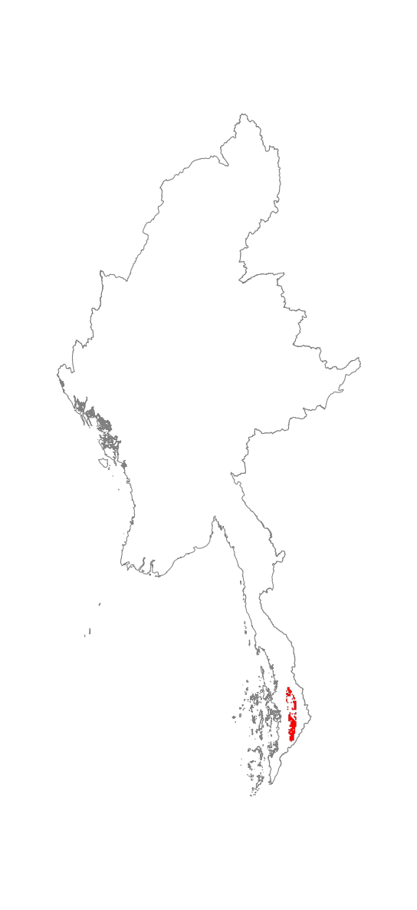

Tanintharyi limestone tropical evergreen forest
Authors: N.J. Murray, R. Tizard, D.A. Keith
Ecosystem names: Tropical rainforest (Kress et al. 2003), Lowland evergreen rainforest (G. Connette et al. 2016), Forest on Limestone [Whitten et al., 1997]
Biome: Tropical-subtropical forests biome (T1)
Functional Group: Tropical/Subtropical lowland rainforests (T1.1)
Global classification: MMR-T1.1.3
IUCN Status: Endangered
Ecosystem Map: 
Distribution: Occurs in karst landscapes in southern Tanintharyi. We used a global karst layer to refine our maps of this ecosystem type, and further work to map karst landscapes in southern Myanmar is recommended.
Characteristic Native Biota: Characteristic species of this ecosystem remain relatively unknown. Stamp (1925) lists the tree species occurring in this ecosystem as including Dipterocarpus alatus, D. grandiflorus, and D. turbinatus, Shorea spp, Anisoptera sp., Hopea odorata, and Parashorea stellata. This ecosystem occurs in isolated fragments and has high physical complexity, a suite of microhabitats, and relatively stable climate, this ecosystem provides habitat for a large number of endemic species, including gekkos and molluscs (Whitten et al., 1997; Grismer et al., 2018). This ecosystem supports some of the remaining populations of sundaic avifauna in Myanmar. This includes Great Argus Argusianus argus (NT), Storm’s Stork Ciconia stormi (EN), White-crowned Hornbill Berenicornis comatus (EN), Helmeted Hornbill Rhinoplax vigil (CR), Red-throated Barbet Psilopogon mystacophanos (NT), Blue-rumped Parrot Psittinus cyanurus (NT), Banded Broadbill Eurylaimus harterti, Black-and-yellow Broadbill Eurylaimus ochromalus (NT), Green Broadbill Calyptomena viridis (NT), Crested Jay Platylophus galericulatus (NT), as well as a range of Bulbuls (Pycnonotidae) and Ground Babblers (Pellorneidae). The mammalian fauna is equally impressive with populations of Banded Langur Presbytis femoralis robinsoni (NT), Dusky Langur Trachypithecus obscurus (NT), Lar Gibbon Hylobates lar (EN), Banded Civet Hemigalus derbyanus (NT), Tiger Panthera tigris (EN), Mainland Clouded Leopard Neofelis nebulosa (VU), Asian Elephant Elephas maximus (EN) and Malayan Tapir Tapirus indicus (EN; Eames et al. (2005)).
Abiotic environment: Shallow soils that can be fairly acidic, topographically complex and reliable year-round rainfall of >100 mm per month and warm temperature that rarely fall below 10° C.
Key processes and interactions: Distribution is largely defined by the occurrence of Karst landscapes coinciding with a mean monthly rainfall of around 100 mm per month. This ecosystem may periodically become very dry, but a dense evergreen canopy can support humid microclimates throughout these periods (Whitten et al., 1997).
Major threats: Unregulated quarrying is considered a primary threat to this ecosystem (Grismer et al., 2018). In addition, deforestation is widespread in this region, primarily for the development of oil palm plantations, rubber plantations and other agroforestry, with deforestation rates reaching 7.85% in some areas of Tanintharyi, the highest rate of forest loss so far recorded in Myanmar (G. M. Connette et al. 2017).
Ecosystem collapse definition: This ecosystem is regarded as collapsed when its area has declined to zero, or when the proportion of the ecosystem considered primary forest declines to 0.
Assessment summary: This ecosystem is highly restricted to limestone substrates and ongoing threats, particularly from quarrying, suggest that this ecosystem is undergoing a continuing decline.
Assessment information:| Criteria | Status | |
|---|---|---|
| Criterion A | A1 | DD |
| A2a | DD | |
| A2b | DD | |
| A3 | DD | |
| Criterion B | B1 | EN |
| B2 | LC | |
| subcriteria | B1a(i), B1a(iii) | |
| B3 | LC | |
| Criterion C | C1 | DD |
| C2a | LC | |
| C2b | DD | |
| C3 | DD | |
| Criterion D | D1 | DD |
| D2a | DD | |
| D2b | LC | |
| D3 | LC | |
| Criterion E | E | NE |
Assessment outcome: Endangered
Year published: 2020
Date assessed: 24th January 2020
Assessment credits:
Assessed by: Nicholas Murray
Reviewed by: David Keith
Contributions by: Lee Grismer
Criterion A: No time-series map data was available for assessing reduction in distribution of this ecosystem over any of the assessment time frames. Data Deficient.
Criterion B: {embed}mmr-t1.1.1-crit-b-summary
This ecosystem is highly restricted in limestone landscapes and has an AOO of 56 10 x 10 km grid cells and an EOO of 3,796 km2 There is evidence that limestone quarrying and other threats are leading to continuing decline, meeting subcriteria a(i) and a(iii). The ecosystem is assessed as Endangered.
Criterion C: Climate simulation models suggest that environmental conditions within the limestone landscapes of southern Myanmar are unlikely to reduce suitable areas sufficiently to result in this ecosystem becoming threatened by 2050. It should be noted that the occurrence of Karst landscapes is a key distributional driver of this ecosystem, and the scale at which the suitability models were run may not adequately depict the fine-scale changes expected over the next three decades. We recommend further work to refine maps of Karst landscape to better limit the distribution of our model. Least Concern.
Criterion D: Remote sensing analyses suggest that 72.4% of the remaining extent of this ecosystem meets criteria to be classified as primary forest (Potapov et al., 2019). If 100% of the ecosystem is assumed to be primary forest in 1750, there has been an 27.6% loss in primary forest extent since 1750. We assume that loss of primary forest has a relative severity of >90%, and use the extent of primary forest loss as a biotic variable for assessing Criterion D. With an 27.6% loss of primary forest extent, the ecosystem is assessed as Least Concern under Criterion D3. Analyses of the time-series of primary forest data (n = 18 time points) indicate that there has been 8.4% reduction in primary forest cover over the period 2000-2017. A linear model fit to this dataset, assuming that collapse occurs at 100% loss of primary forest cover, suggests that primary forest loss in this ecosystem will not occur to an extent to meet any category thresholds over a 50 year period (1984- 2034). The ecosystem is assessed as Least Concern under Criterion D2b. Least Concern.
Criterion E: No models were used to assess Criterion E. Not Evaluated.